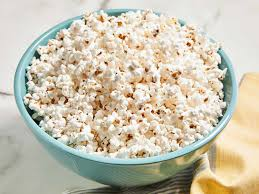

Home
Microwave Popcorn

Description
Believe it or not, you can make your own delicious, low-fat microwave popcorn using standard popping corn and a brown paper lunch bag. It works perfectly.
Ingredients
- Unpopped popcorn
- Vegetable oil
- Salt
Steps
- Gather all ingredients
- Mix together unpopped popcorn and oil in a cup or small bowl.
- Pour the coated corn into a brown paper lunch sack, and sprinkle in the salt. Fold the top of the bag over twice to seal in the ingredients.
- Cook in the microwave at full power for 2 1/2 to 3 minutes, or until you hear pauses of about 2 seconds between pops. Carefully open the bag to avoid steam, and pour into a serving bowl.
- Enjoy!
Actual recipe